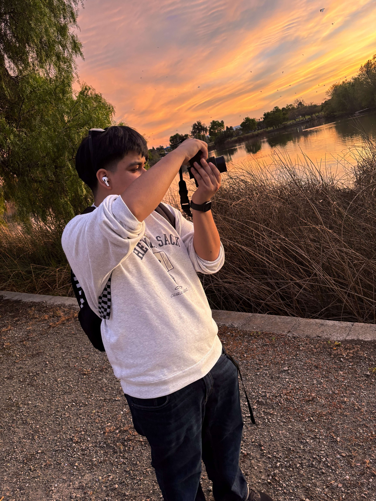

Welcome to my page!
Alfonso Garcia Gonzalez was born in Fremont, CA (2004). Alfonso mostly specializes in photography but also has learned to use other forms of New Digital Media Art! He worked with texteditor and has the ability to alter images to create "glitch art". In addition to this, he also has used softwares such as photoshop to create memes relating to technology itself! Alfonso wishes you will all enjoy his work! Thank you for reading!